In this Lab we will setup simple Tube flaring operation in two stages.
Operation 1(Flair): In this lab we will perform Tube Flaring deformation operation using workpiece, punch and dies
Operation 2 (Unload): In this operation we will analyze the tube after unloading the tools upon completion of the Tube Flaring.
1.1.2. Adding 2D Forming Operation
1.1.3. Select Geometry type and Simulation Modes
1.1.4. Add material from Library
1.1.6. Define Workpiece general object data
1.1.7. Create workpiece geometry from primitive
1.1.8. Generate Mesh for workpiece
1.1.9. Assign Material to Workpiece
1.1.10. Assign Workpiece boundary condition
1.1.11. Defining Top die object data
1.1.12. Import the Punch geometry
1.1.13. Assigning movement controls to Punch
1.1.14. Defining Bottom die object data
1.1.15. Import the Die geometry
1.1.17. Define Inter-object relations
1.1.18. Define Stopping controls
1.1.20. Data checking and database generation
1.1.21. Run and monitor a simulation
1.2.1. Adding second Forming operation
1.2.2. Deleting Dies in Object page
1.2.3. Initializing Workpiece displacement value
1.2.6. Data checking and database generation
1.2.7. Run and monitor a simulation
On a Windows machine, go to the  button select DEFORM-v1x.xxx (.xxx indicates version number E.g. v14.0.2) and select DEFORM GUI Main v1x.x from the menu. The DEFORM GUI Main window will appear.
button select DEFORM-v1x.xxx (.xxx indicates version number E.g. v14.0.2) and select DEFORM GUI Main v1x.x from the menu. The DEFORM GUI Main window will appear.
Create a new problem either by selecting File  New Problem or by clicking the New Problem
New Problem or by clicking the New Problem  icon. The Problem Setup window will appear as shown in Fig. 2DTFL1.1. Select " Integrated Manufacturing Process"
radio button and unit system as "English" radio button in unit field. Define Problem Name as " Tube_Flaring" and make sure the “Show option dialog” check box is
turned on (if we do not turn on the “Show option dialog” check box, then we will not get the New Project dialog). Then click on
icon. The Problem Setup window will appear as shown in Fig. 2DTFL1.1. Select " Integrated Manufacturing Process"
radio button and unit system as "English" radio button in unit field. Define Problem Name as " Tube_Flaring" and make sure the “Show option dialog” check box is
turned on (if we do not turn on the “Show option dialog” check box, then we will not get the New Project dialog). Then click on  button to open a new problem using
the Deform Integrated Manufacturing Process.
button to open a new problem using
the Deform Integrated Manufacturing Process.
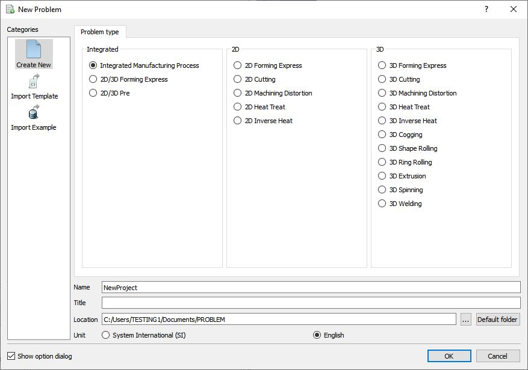
Problem Setup Window
Multiple operation wizard will opens along with New Project window, retain the project name as Tube_Flaring and confirm that First operation check box is unchecked as we will add operation later and use the default (home) directory
as problem location as shown in Fig. 2DTFL1.2. Click  to open new project.
to open new project.
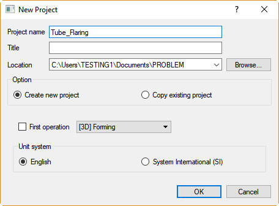
New MO Project window
Multiple Operation wizard will open a new project. Add 2D Forming operation from the Explorer Operations list. Operation can be added by clicking on 2D Forming operation  button
(See Fig. 2DTFL1.3.) or user can also add by drag and drop into the Operation Editor.
button
(See Fig. 2DTFL1.3.) or user can also add by drag and drop into the Operation Editor.
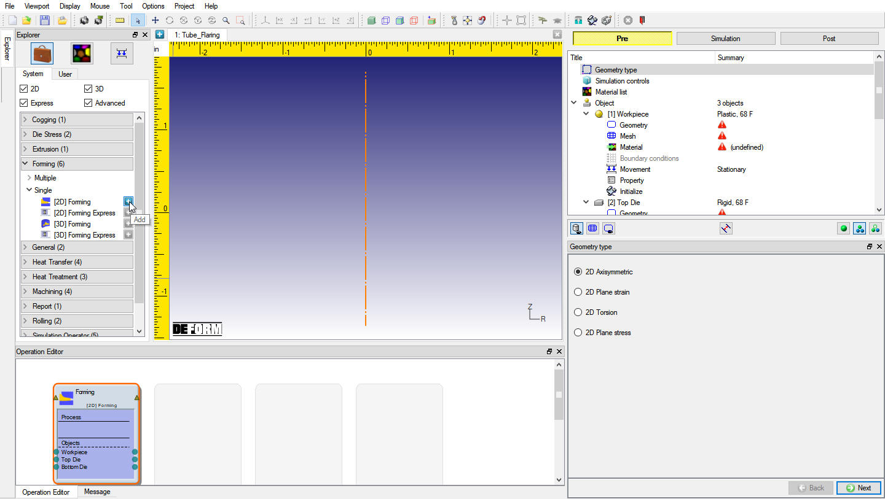
Adding 2D Forming operation from operation explorer
Change the default operation title to "Flaring" from Forming by selecting the title in the operation editor as shown in Fig. 2DTFL1.4 and press Enter keyboard button.
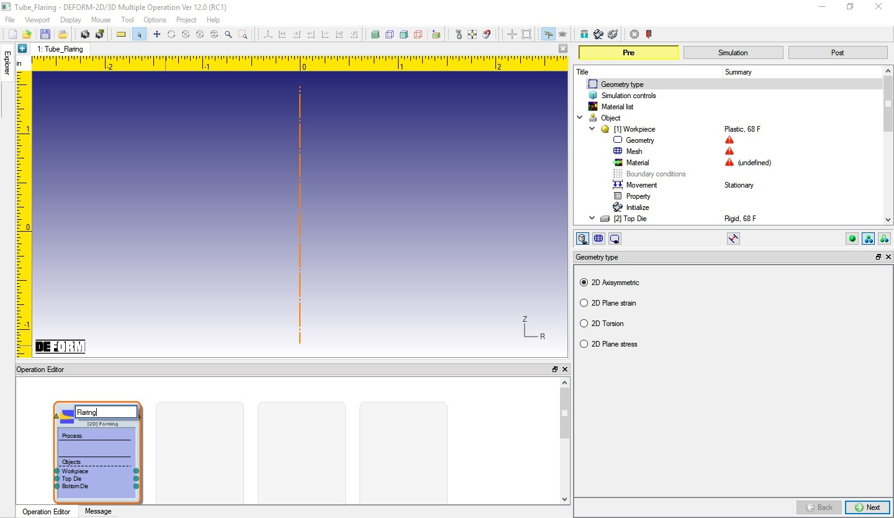
Renaming operation title to Flaring
Confirm the geometry type selected is Axi-symmetric in Geometry type page, then click .
.
In this lab we will be showing how to setup simple Isothermal problem, so in Simulation controls page, uncheck the Heat transfer mode check box (See Fig. 2DTFL1.5), then click  .
.
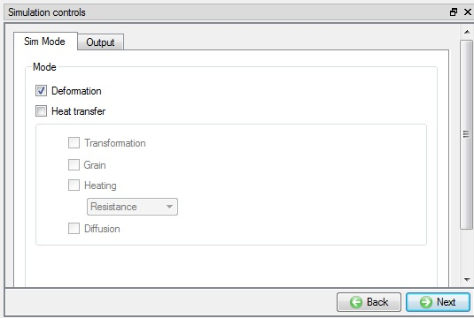
Simulation control window
Click the  (Load material from library) button as shown in Fig. 2DTFL1.6. Select the Steel category,
then select AISI-1010,COLD[70F(20C)] and click the
(Load material from library) button as shown in Fig. 2DTFL1.6. Select the Steel category,
then select AISI-1010,COLD[70F(20C)] and click the  button.
button.
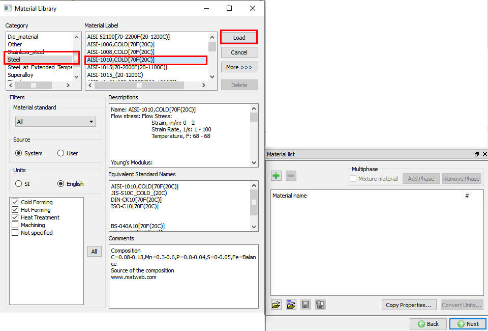
Loading material from library
Material is loaded to material list, click  .
.
To improve convergence in cold material we will edit material properties. Click the  next to Flow Stress. Select the strain rate “100”
field and delete it (See Fig. 2DTFL1.7.). This leaves a single strain rate which is reasonable and better for convergence. Click
next to Flow Stress. Select the strain rate “100”
field and delete it (See Fig. 2DTFL1.7.). This leaves a single strain rate which is reasonable and better for convergence. Click  .
.
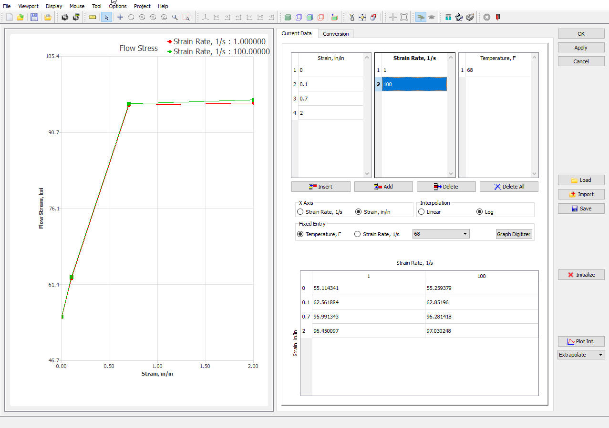
Editing Material Flow stress data
The Flaring operation to be simulated requires a workpiece, top and bottom die. By default, three objects will be added in Forming operation list, if not added click the (insert
object) button three times to add 3 objects to list, Workpiece and two dies. Object window looks as shown in Fig. 2DTFL1.8. Click  button.
button.
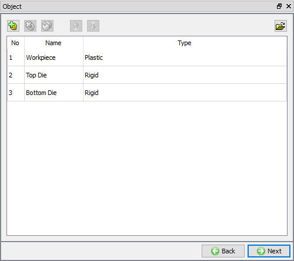
Objects window to Add or Delete the objects
Accept the default object name Workpiece. Assign the temperature as 70°F and select the object type as Elasto-plastic. (See Fig. 2DTFL1.9.).
Click  button.
button.
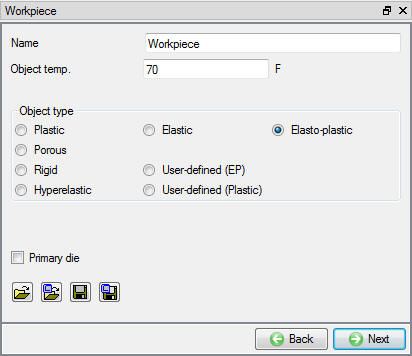
Workpiece object window
Click on the  button to create a geometry within DEFORM. The workpiece Outer diameter is 2.2”, Inner diameter is 2" and Height is 3", so you will define a width
of half the diameter. Select Hollow cylinder, enter Inner radius as 1, Outer radius as 1.1. and Height as 3, (See
Fig. 2DTFL1.10.). Click on
button to create a geometry within DEFORM. The workpiece Outer diameter is 2.2”, Inner diameter is 2" and Height is 3", so you will define a width
of half the diameter. Select Hollow cylinder, enter Inner radius as 1, Outer radius as 1.1. and Height as 3, (See
Fig. 2DTFL1.10.). Click on  button and then observe
the geometry in graphics window. Click
button and then observe
the geometry in graphics window. Click  button to generate workpiece mesh.
button to generate workpiece mesh.
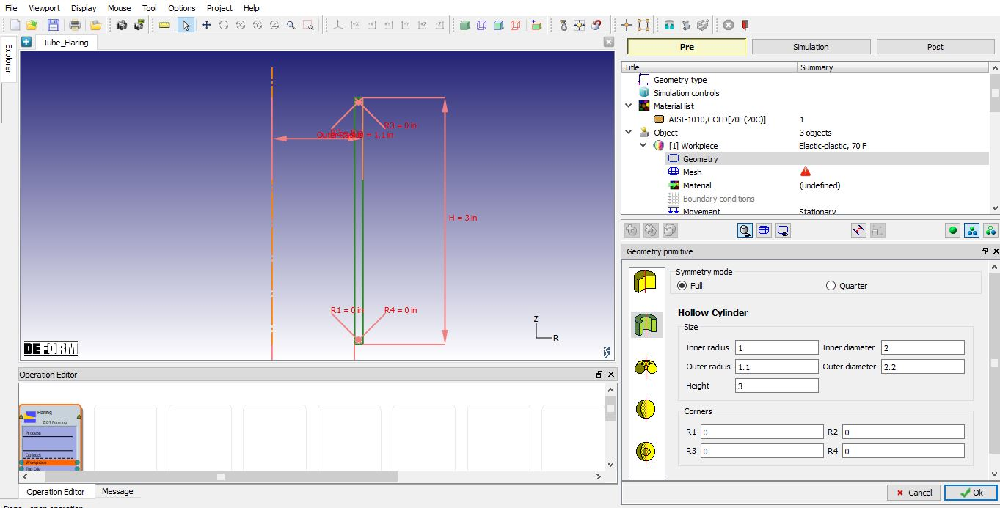
2D axi-symmetric geometry primitive window
We will generate Mapped mesh with 350 elements and 4 elements in Thickness direction. So, click on  icon to switch to expert mode. Define Target number of elements as
350, Thickness elements as 4, check Mapped mesh check box and click the
icon to switch to expert mode. Define Target number of elements as
350, Thickness elements as 4, check Mapped mesh check box and click the  button to generate the
mesh for workpiece as shown in Fig. 2DTFL1.11. Click
button to generate the
mesh for workpiece as shown in Fig. 2DTFL1.11. Click  button to assign
material for workpiece.
button to assign
material for workpiece.
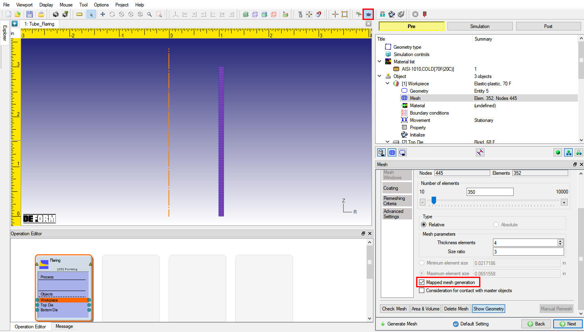
Expert mode mesh window
Select the AISI-1010,COLD[70F(20C)] in the material window to assign the material to the workpiece. Click  button to assign the workpiece boundary conditions.
button to assign the workpiece boundary conditions.
Assign Vy=0 boundary conditions to the bottom edge of the workpiece as shown in Fig. 2DTFL1.12. Click  button until Top die page.
button until Top die page.
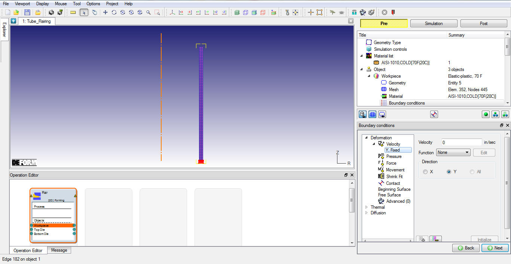
Assigning BCC for Workpiece
Change the Object name to "Punch", Keep the Top die default temperature as 68° F and confirm the object type selected is rigid and Primary die check box is turned on as shown in Fig. 2DTFL1.13. Click  to Punch geometry page.
to Punch geometry page.
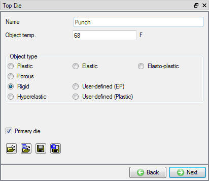
Top die window
Click the  (Load geometry from a file) button and import the file “FlarePunch.IGS” by browsing the geometry file path located in DEFORM installation folder \Tutorials directory. Check the geometry using
(Load geometry from a file) button and import the file “FlarePunch.IGS” by browsing the geometry file path located in DEFORM installation folder \Tutorials directory. Check the geometry using  option to make sure the geometry is OK. Click
option to make sure the geometry is OK. Click  until Punch movement page.
until Punch movement page.
The default mode is constant speed. Input a value of 5 in/sec for the Constant value and confirm that the Direction is -Y as shown in Fig. 2DTFL1.14. Click  until Bottom die page.
until Bottom die page.
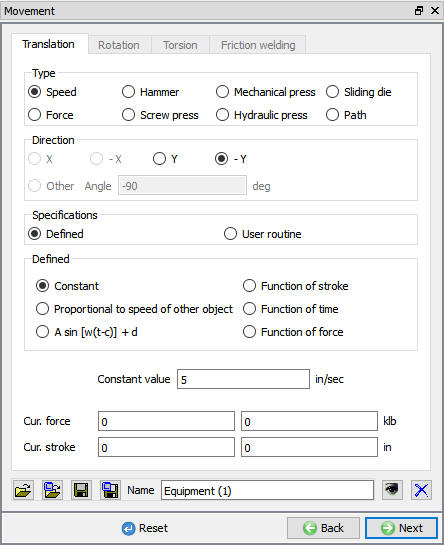
Punch movement window
Change the Object name to "Die", Keep the Top die default temperature as 68° F and confirm the object type selected is rigid. Click  to Die geometry page.
to Die geometry page.
Click the  (Load geometry from a file) button and import the file “FlareDie.IGS” by browsing the geometry file path located in DEFORM installation folder \Tutorials
directory. Check the geometry using
(Load geometry from a file) button and import the file “FlareDie.IGS” by browsing the geometry file path located in DEFORM installation folder \Tutorials
directory. Check the geometry using  option to make sure the geometry is OK. Click
option to make sure the geometry is OK. Click  until Positioning page.
until Positioning page.
The geometries should be in the correct position. Confirm that the workpiece is positioned on top of the bottom die and that the top die is positioned against the workpiece. Further positioning is not required for this operation. Click  until Contact page.
until Contact page.
Assign the default inter-object relationships using  button. The workpiece should be slave to both the Punch and Die. Click on the
button. The workpiece should be slave to both the Punch and Die. Click on the  button for one of the relationships. Select Coulomb type friction radio button, define 0.1 value. Click
button for one of the relationships. Select Coulomb type friction radio button, define 0.1 value. Click  to exit the
menu. Click
to exit the
menu. Click  to apply the friction value to the two other relationships. (See Fig. 2DTFL1.15.).
Click
to apply the friction value to the two other relationships. (See Fig. 2DTFL1.15.).
Click  to Stopping controls page.
to Stopping controls page.
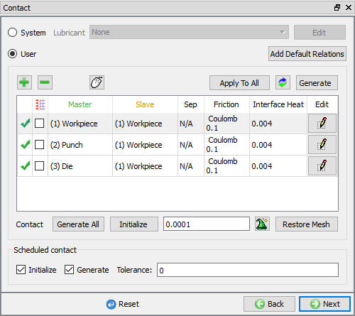
Inter - object Relation window
Click on  mode icon to switch to Guided mode. Assign Max die stroke value as 1.14" in Y direction by checking Max die stroke check
box as shown in Fig. 2DTFL1.16. Click
mode icon to switch to Guided mode. Assign Max die stroke value as 1.14" in Y direction by checking Max die stroke check
box as shown in Fig. 2DTFL1.16. Click  to Step page.
to Step page.
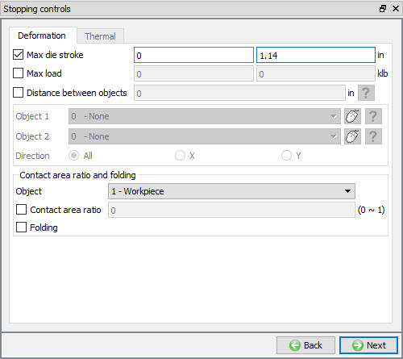
Stopping controls window
The tool needs to move by 1.2’’ to produce the desired shape and die displacement per step = 10% of element edge length. The element edge length is 0.025" when measured, So the Number of Simulation Steps is equal to 1.2"/(10% of 0.025").
Hence define Number of Steps as 480, Step increment as 5 and die displacement per step as 0.0025, see Fig. 2DTFL1.17. Click  to Generate DB page.
to Generate DB page.
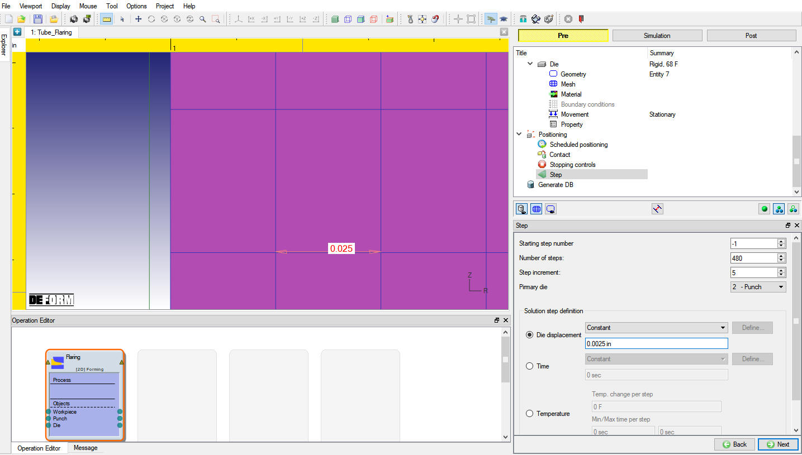
Step controls window
Click on the  button, the data checking system will confirm that defined data is appropriate for running a simulation.
button, the data checking system will confirm that defined data is appropriate for running a simulation.
Red marks indicate missing or incorrect data that will prevent a simulation from running. It is necessary to correct those errors before the database can be generated.
Yellow marks indicate data which may be suspect and should be reviewed. These should be investigated carefully, as they might result in system instability or erroneous (incorrect) results.
Review the data checking information. If there are no yellow or red marks, click the  button.
button.
You should look for the words: Database has been generated. When you see this, it means that your inputs have been saved to the database and you are now ready to run the simulation.
Click on the MO  Mode button (above the operation tree) to start the simulation.
Mode button (above the operation tree) to start the simulation.
Click on the  action label to open the Run Options dialog. Use the default Continue Run option to select “Continue from the last step” option
and then select the Simulation mode as Interactive and click on
action label to open the Run Options dialog. Use the default Continue Run option to select “Continue from the last step” option
and then select the Simulation mode as Interactive and click on  button to run the simulation.
button to run the simulation.
The progress of the simulation can be monitored as it is running by looking at the Simulation Message tab and Simulation Graphics from the Graphics display region in Simulation mode. If  option is checked in Simulation Message tab, which is the default setting, the Message file will refresh automatically.
option is checked in Simulation Message tab, which is the default setting, the Message file will refresh automatically.
The Message file provides information about which simulation step the simulation is currently on and information dealing with how well the simulation is running as shown in Fig. 2DFRCL2.18.
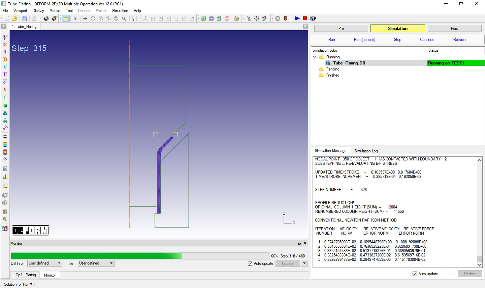
Running the simulation from MO simulation mode
After completion of simulation, click on  MO mode button to switch to Pre mode and continue to setup the next operation.
MO mode button to switch to Pre mode and continue to setup the next operation.
In this operation we will perform Springback analysis by unloading in 2D Forming operation.
Add 2D Forming operation from the Explorer Operations list. Operation can be added by clicking on 2D Forming operation  button or user can also add by drag and drop into the Operation
Editor.
button or user can also add by drag and drop into the Operation
Editor.
Select the 2D Forming operation from operation editor to open the 2D forming operation. Select the  button for Setup type popup (See Fig. 2DTFL1.19.)
to setup the problem in batch mode.
button for Setup type popup (See Fig. 2DTFL1.19.)
to setup the problem in batch mode.
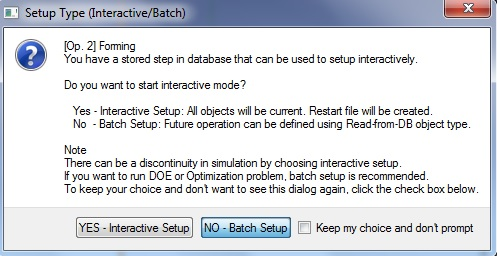
Selecting Batch mode type setup
Change the default operation title to "Unload" from Forming by selecting the title in the operation editor as shown in Fig. 2DTFL1.20. and press Enter keyboard button after editing the table. Click  until Object page.
until Object page.
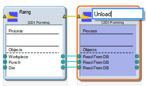
Renaming operation title to Unload
Delete Punch and Die from the list using button (See Fig. 2DTFL1.21.).
Click  until workpiece Initialize page.
until workpiece Initialize page.
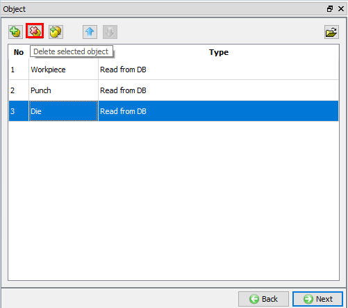
Deleting Punch and Die using Delete button in Object window
Turn on the Displacement Checkbox and use default 0 value to initialize (See Fig. 2DTFL1.22.). Click
 until Stopping controls page.
until Stopping controls page.
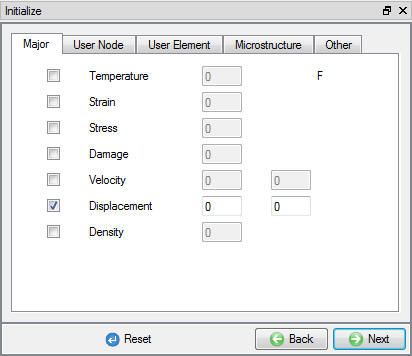
Workpiece Initialize window
Ensure that the stroke stopping criteria is initialized i.e., turned off. Click  to Step page.
to Step page.
Assign the Number of steps as 5, Step increment as 1 and time increment as 1e-3 seconds (See Fig. 2DTFL1.23.)).
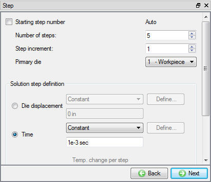
Step controls window
Click on the  button, the data checking system will confirm that defined data is appropriate for running a simulation.
button, the data checking system will confirm that defined data is appropriate for running a simulation.
Red marks indicate missing or incorrect data that will prevent a simulation from running. It is necessary to correct those errors before the database can be generated.
Yellow marks indicate data which may be suspect and should be reviewed. These should be investigated carefully, as they might result in system instability or erroneous (incorrect) results.
Review the data checking information. If there are no yellow or red marks, click the  button.
button.
You should look for the words: Database has been generated. When you see this, it means that your inputs have been saved to the database and you are now ready to run the simulation.
Click on the MO  Mode button (above the operation tree) to start the simulation.
Mode button (above the operation tree) to start the simulation.
Once the database has been generated, switch to the Simulation mode by clicking on  button above the operation tree. Click on the
button above the operation tree. Click on the  action label to open the Run Options dialog. Use the default Continue Run option to select “Continue from the last step” option and then select the Simulation mode as Interactive and click on
action label to open the Run Options dialog. Use the default Continue Run option to select “Continue from the last step” option and then select the Simulation mode as Interactive and click on  button to run the simulation.
button to run the simulation.
Watching the simulation graphics provides an initial idea of what to expect when opening the postprocessor. Also monitor simulation from Simulation and log messages. The message file and log file will indicate that the simulation has been completed
on the last line, confirming that click on  Mode button to review results.
Mode button to review results.
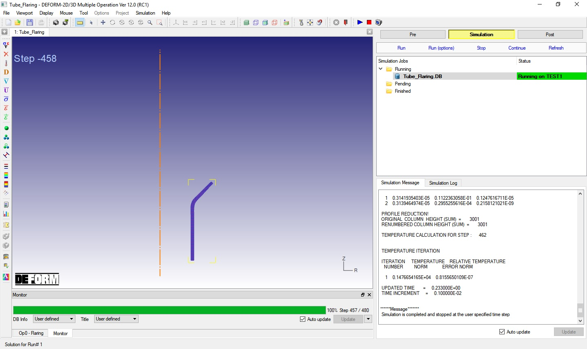
Monitoring the simulation in Simulation mode
State variables:
To view the spring back, open state variable dialog  and plot total displacement from displacement. Click on Deflection tab and select the Use Deflection checkbox on the “State
Variables” dialog. The workpiece with magnified distortion is shown in Fig. 2DTFL1.25. Use the slide bar to
increase or decrease the exaggeration of distortion.
and plot total displacement from displacement. Click on Deflection tab and select the Use Deflection checkbox on the “State
Variables” dialog. The workpiece with magnified distortion is shown in Fig. 2DTFL1.25. Use the slide bar to
increase or decrease the exaggeration of distortion.
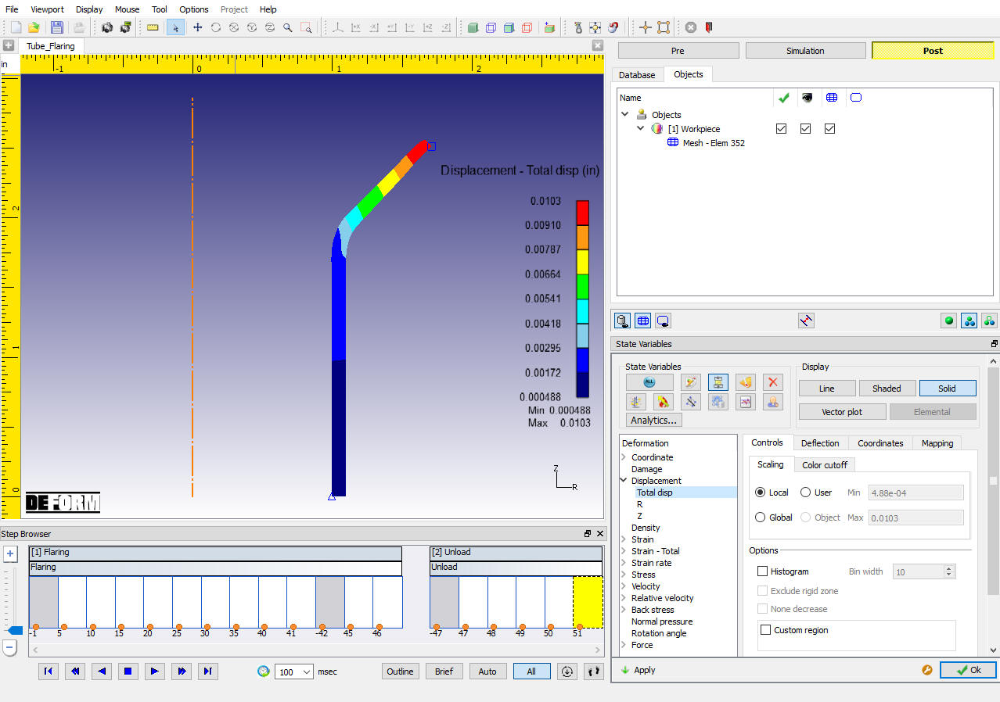
Total-Displacement state variable with Deflection
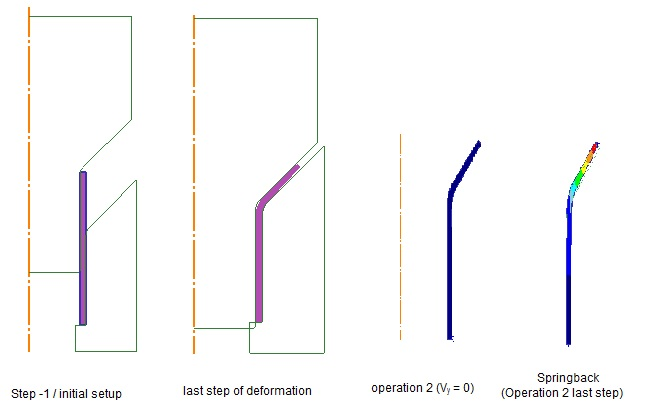
Tube Flaring operation Workpiece shape in each operation first and last step